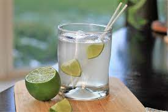

Gin and Tonic

Description
The gin and tonic is a classic, easy to make cocktail that mixes floral flavors from gin with tangy lime.
Ingredients
- Half a lime
- 2 oz gin
- 6 oz tonic water
Steps
- Juice the half of lime.
- Combine the gin, lime juice, and tonic in a glass over ice and stir.